Archives : 2010-11
第三次烙饼。 @ Nov 30, 2010
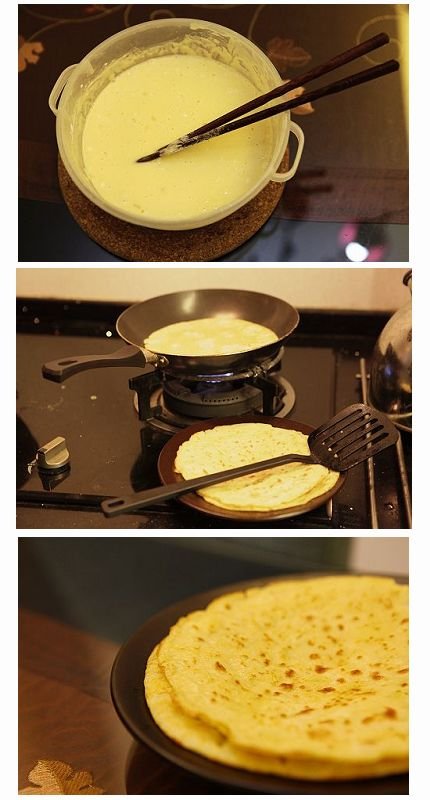
对呀，失败是成功之母，从第一次烙饼的狼狈，到第三次烙饼的游刃有余，开心！用了樱桃妈妈的方子，作为主食吃的饼，所以没加奶，打了鸡蛋加了凉白开，双手不沾面粉真爽，筷子搅拌均匀，不粘锅里刷上一层食用油，勺子挖起面汤铺撒在锅底。有时午饭剩的米饭不够吃，或者晚餐做了稀饭，可以烙两三张饼。加了鸡蛋的饼，狗狗们也爱吃。当俺们烙饼一次比一次手脚麻利，想焦一点还是嫩一些，完全看自己喜欢。俺们开始妄想神马时候是不是能搞个批萨出来？
旅行真是对工作和生活有所调节，回来第二天上班，自己都感叹这工作电话温柔了许多，以及天天午饭、晚饭必然有新菜上桌，创意才思云涌啊，中午也有心情跑去菜场拎些新鲜蔬菜回家，做个两菜一汤的效率大大提高。
爱上做饭，或者说渐渐习惯了做饭的生活，没有好吃好喝的日子仿佛缺少了什么似的。俺们干完家务，洗手，涂护手霜，照样擦上新的指甲油。有人说地好：“这一滋一味就在平常的白水日子里。”
四十岁是个冷笑话 @ Nov 29, 2010
原文来自：行走的散板
四十岁的女人偶尔撒个娇
也不过是个玩笑
会哄着自己高兴了
这才叫做成熟
要过生日我想起我才不过三十八
明年毛的才算个四十
简直越活越年轻哇
这两年最明显的感觉是
心静下来了
以前它一直悬在半空
不知所终
那些嘈杂喧嚷的
名字叫做各种
欲念的
它们悄无声息地
不知都躲去了哪里
去滋扰那些更年轻的了吧
其实我挺怀念的
欲望们 你们好
现在我们终于可以平静相处了
像是无端幻想的爱情
落实成了琐碎乏味的生活
外面 雪静静地落着
静静地 藏着岁月的杀机
再过几年也许会变得唠叨
但现在看还没到时候
孩子长得挺大了
还好不算太叛逆
他们眼里
我们早已是日历上翻过去的一页
怪大叔怪大婶们
好像大都患了焦虑症
拼命要把自己半生吃了亏的经验
一股脑输进另一张新的硬盘
没有变 基本什么都没有变
还是大房子 还是好车子
女人穿得更时尚
男人心里更彷徨
不对，现在流行淡定了
世上无难事
只要肯淡定
我们在过度开掘前淡定
我们在贫苦无助前淡定
我们在冤屈不公前淡定
我们在千奇百怪前淡定
人人都懂得一点艺术了
落实到吃穿住行
村里人要集中住楼
城里人说向往田园
都是向上 向上
情趣愈见高雅
品味渐次提升
人人都会说一些冷笑话了
在真情不宜的情境下
活跃一下尴尬的气氛
我说女人的四十岁
还真是个冷笑话
“酷一会儿萌一会儿
然后再萌一会儿酷一会儿”
自己哄着自己玩
外人眼里
怎么都是杯冷掉了的咖
@香港 @ Nov 24, 2010
去港几次，几乎没刻意跑跑景点，如果不是Sherry，这一次我可能还是睡懒觉，毫无目的的闲逛，第一次去海洋公园，印象特别好。适合情侣，适合母子，适合伙伴们一起游玩一天的地方。
彩色气球上是海洋公园的吉祥物？一只长了腿的帅海豹？

海底列车，开起来时车厢里昏暗下来，车顶上播放各种海洋动物的画面。成年人也招架不住这般奇妙的景象。

梦幻的水母馆，虽然它们危险到足以杀死人类，但在各种色彩的灯光照射下，让人无法忽视它们奇异的美。
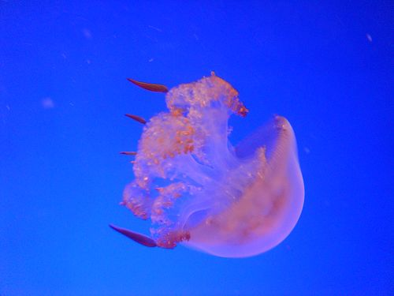
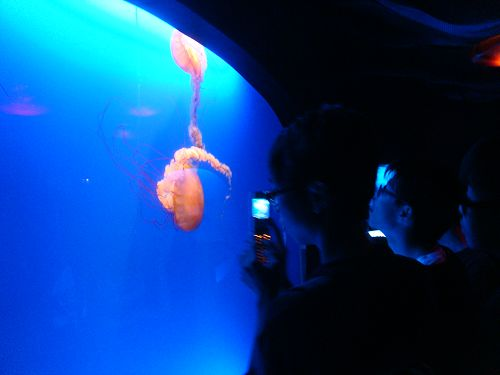

不仅海洋剧场里的解说分中英粤语三种，地铁也这样了。

一池火烈鸟，似乎它们从不跨越到池子的外面来，羽毛最红的应该是成年火烈鸟，再往下有粉色和白色，我们坐在石阶上边休息边观赏它们，有三只红色的鸟打起架来，两打一，好象只是象征性相互啄对方，倒还没有到鸡飞狗跳的程度，鸟也有鸟的社会矛盾啊~被圈起来的火烈鸟，完全失去了在非洲湿地上的自在。

喜欢香港海洋公园的原因是可观赏到之前在电视上才能看到的动物，海洋馆的透明“鱼缸”上下三四层高，游客环绕鱼缸盘旋上下，不同楼层不同景致，那些海鱼体型硕大，且那么多不同品种的鱼在一起，着实壮观。视觉与好奇心被满足的同时，也会产生一丝丝心酸感，它们本可以生活在属于它们的世界里。

百雀园里的黑天鹅，很落寞地浮游在人工水池里，没有水草，没有任何自然的景观，干粑粑的水泥池子，看着让人心疼。那么美丽的动物，不知从哪里运到这里的？

各种颇具观赏性的彩色小鱼，旁边总有一块牌子上写着请勿用闪光灯，小朋友举着照相机到处拍，闪光灯噼里啪啦的闪，家长的素质直接反映在孩子身上，从小培养公德意识，也不早了。
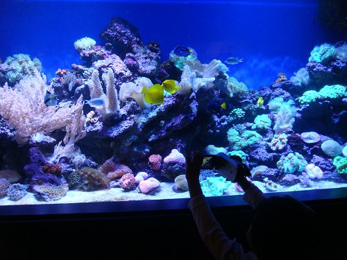
站在树干上吃水果的小鸟们，俺们从树下走过，举着包当伞用，生怕天上随时投下的炸弹。
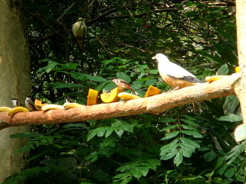
通往百雀园的路，sherry很喜欢路边高耸入天的树木，叫俺们摆拍一张，并要求把脸伸进那一片光线下。
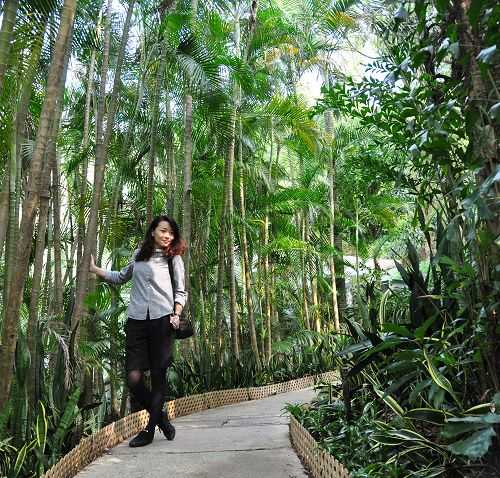
浅水湾路遇这只英国可卡，毛色体型和Luke几乎一致，俺们就象安全特工似的尾随其后，左看看右瞧瞧，以解对俺家狗狗们的相思之苦。一位菲律宾妇女推着童车，牵着它，缓慢悠闲的行走在浅水湾幽静的人行道上，路边的老榕树，不知被人行走过多少遍的小街道，静谧的氛围，一切似乎都在沉淀的同时衍生出另一种更有韧性的生命力。
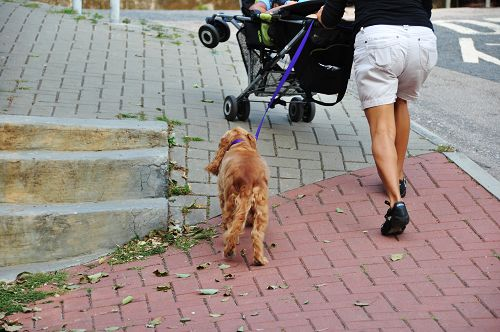

俺们还是搭讪去了，哎呀，它居然是只漂亮又温柔的小女生哎，恨不能直接抢回来给Luke做老婆啊。

这只英卡叫Maggie，它笑得比俺们矜持，好象俺们只有对狗才会笑得这么欢，呵呵~可卡喜于与人亲近，我摸摸它，她就开心地倒地上四脚朝天了，跟LUKE一样一样的。
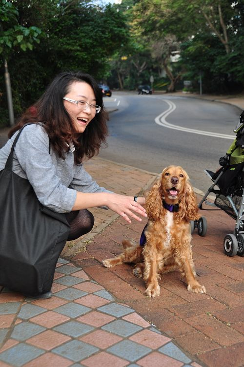
弹丸之地的香港，去了总要买些东西回来。了解了同品牌在香港的价格，感觉内地的商场简直是在打劫！有一次购物累了，坐在椅子上休息，和身边的本地人闲侃，我说你们香港女孩子没见着几个漂亮的，气质也很一般。人家说的确是，好看的都是外地来的。我才知道熊黛林是南京大厂人？！走在香港的大街上，脑子里忽然冒出一句“去TNND的街拍”......街拍让全世界妇女都穿成一个样儿了，那些毫无悬念与惊喜的时髦打扮，让人杀心四起，腻味极了。能不能给点新意呢？在香港，你会发现大街上的妇女们，很难找到衣饰一致的，各有各的搭配，各有各的穿衣想法，混搭风居多，在中环CBD遇到两位既美丽又精致端装的职业妇女，养眼。人家甭管多时尚，甭管多雷人，就是能自信地穿着自己喜欢的衣服，很享受的出门了。这就是个性吧？要知道，模仿永不能超越。不如穿出自己的审美与品位。
内地各大城市几乎一色“新”，路是新的，房子也是新的，旧的东西几乎都被拆了，或计划被拆中。香港的路和房子虽然旧，可旧得有味道，让人感到塌实。港人能买得起车的人不比内地少，为何街上的车却没有内地多？除了用车费用之外，香港交通工具的确发达，从地铁巴士到百年之物“叮当车”，极其方便出行。以及，街上的车几乎没有低于时速60的，和欧洲感觉差不多，开得快，到红灯必然停，规矩地开在自己的行车道上。回头想想俺们这儿，常常遇见时速30以下在马路上散步的开车人，这样能省几个钱？你们怎么就不想想好狗不挡道呢？要不就别开车，直接散步去得了。香港的车那叫一个干净，在南京，俺们没得肺病前估计车已经病得不轻了，政府为了减少灰尘，定时在马路上洒水，更TNND让人生气，才洗干净的车，溅了一身泥水...据说国外的工程车必须冲洗成新车摸样才能再次上路，俺们这里的工程车开过去都带烟儿的，走一路撒一路，同一个地球，差距咋就那么大呢...
有人说“爱香港不爱新加坡。香港有一种人间烟火气，人们也都成熟得体...”握手，与香港相比新加坡太“新”了，不象香港那般沉淀下来，老物与新景融合在一起，彼此牵扯着时光，那种韧性让人感觉塌实。并且，香港节奏和俺们很合适。
有关排队，俺们还有废话要说，上周六晚上从赤柱返回港岛路过CBD，见一列人排队等车，人与人之间隔那么大空挡。换了俺们，后面人非得贴着你的后背才快活，什么身体舒适的距离，什么包啊挂件的碰了你，完全没有意识，有时感觉内地人享有更大的个人自由主义，若无其事象螃蟹一样横着走路，肆无忌惮毫无礼貌地打量陌生人，随地吐痰甚至随地大小便的...生活在这样的环境下，绅士淑女都是装的吧？果真能心平气和面对夹塞排队？熟视无睹从车里往外倒垃圾，垃圾飘你一车？当然，即便如此，俺们还是得装装绅士淑女，俺们还是很爱自己的家园，希望明天会更好。
近期海关针对IPAD IPHONE4的新规叫嚣得厉害，貌似俺们买了些东西，走得头一天晚上在酒店里拆包装，剪吊牌，帮同事带的项链也准备挂脖子上入境。很犯罪，东西装不下，又买了只箱子，把买的东西分散到两个箱子里，尽管顺利入境，在深圳机场安检时被拦下，说随身的箱子里有一瓶水.....完全记不起来是什么水了？自从干了这份鸟工作，俺们的各种机能都下降不少，尤其是记忆力，大大降低，人的脑子就那么大，工作的事多到要记录下来才行，当然还是会忘，再往里面塞点别的，难度很大。我就觉得自己脑子不够用了，尤其下班时神情近似恍惚，常忘记自己的车停放的位置....就见安检人员搜出瓶香水，我的心立马凉了半截儿，看电脑那厮说不是这个，还有一瓶.....接着搜出一瓶400ML倩碧的水，人家让扔垃圾桶或找瓶子分装......最终俺们还是留在了安检的柜子里。坐飞机上俺们讨论着，往脸上使劲儿扑一些，不行头发上再来点儿，或者倒掉一部分，带走剩下的。帮朋友带的，270港币，千心万苦拎了一大圈，末了给扔了.....就当俺们行李超重被罚款好了。
有关每台入境的IPAD征1000元税的问题，开始商务部发函抗议，现在又和海关穿上一条裤子了。据说近期入境携带IPAD被查验200多起，有50几起是水客携带，有的水客每天往返罗湖口岸多次，每台IPAD可赚取400元左右的辛苦费。有一水客被查验到身上绑满了IPHONE 4......事实上境外IPAD不比内地的价格便宜多少，现在行货还比水货便宜啊。
纠结后还是没有带单反相机去，拿了小卡片机，半天电就用完了，也没兴致充。感觉这次不象是出远门，实际离家还是挺远的，尤其往返深圳与香港之间乘巴士的路程，很象出远门，晃得我五脏六腑似乎都颠倒了位置。是不是年纪大了，越来越离不开家似的，往机场的路上心里就退却了。不知以后还能走多远？
很香哒~ @ Nov 14, 2010
和外甥女把两块粑粑都吃光了，切成小块放在平底锅里干煎至微微焦黄，盛盘。略微翻炒后的黄豆粉香味四溢，撒在粑粑上，配了蜂蜜和蓝莓酱吃，很香哒。朋友间时常交换美食，就这样一起吃吃喝喝到老，多好。
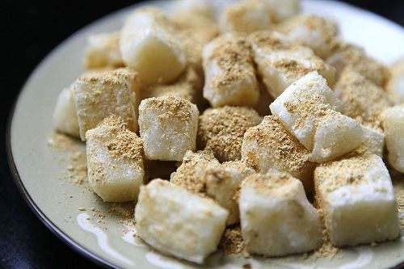
万叶秋声里 @ Nov 14, 2010
Write by Chen wenwen
Photo by Christina
more pix here
好季节里，南京的东郊是把炙手可热的时令蔬菜。所以，我对东郊存有私心。要么在下午曲终人散时，要么在一日繁盛之前，大概只有在此时，东郊的山林树影们是和民国的光阴连续着的。
我和茶小姐是被阳光眷顾的早起的人。一路向阳，啃着大饼油条就入了东郊。走的是体育学院至灵谷寺那条路。梧桐树干笔直而有正气，不存在一丝弯腰的念头。这条路也似向光而长，通向人间的边境。
晨光时针那般移动，在无梁殿的银杏树前落了脚。银杏披裹霞光，羽翼丰满，容颜慈祥，宛若女神仙。地上一片金灿，枝上似乎也不曾缺损，怎么办到的？这株不知多少年的树木，此刻是600年无梁殿的守护者。旧石道，新时光，年复一年的银杏叶。春花有烂漫，盛夏萤火虫，初秋桂花香，深秋是银杏和翻转变幻的山色。冬天也来过，不过那是很久以前，寂静雪白，不是人间。
日光好，注意力就停留在拍照上，想往深处散步的念头也没能延续下去。因为黑压压的人群在10点以后会如海啸侵袭。如果不是周末，步子可以再慢一点，带个保温瓶，用龙竞的乡村花布打包午餐，在厚草地上铺条呢绒毯，在水榭打个盹也不是不可以。
阴雨天的东郊也好，我想念。湿气氤氲，山形隐绰，是低调的灰，我觉得更接近中山陵的肤色，然而那种霾拍不出来，可以画，可以体会。湖水像镜子，青苔和水草在镜面上缓慢地移动，那是悠然仙地。
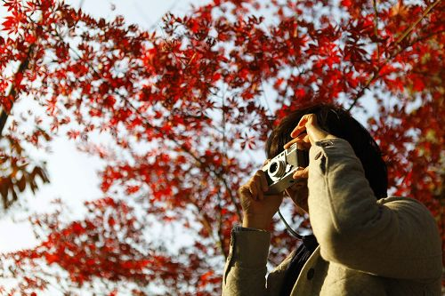

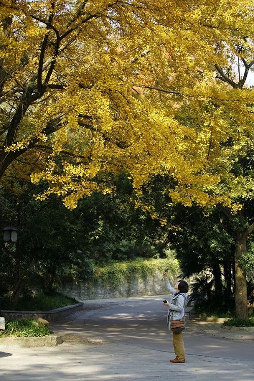
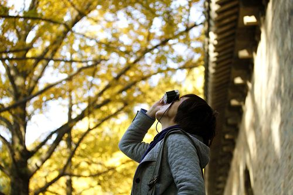
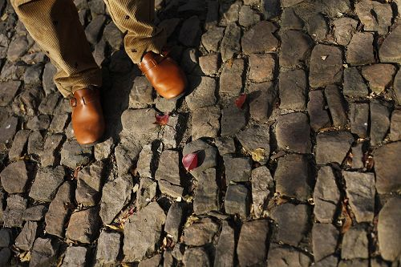
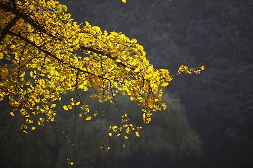


DRESS BLOG @ Nov 12, 2010
近期，一切都是干燥的，从皮肤到头发，包括嘴唇。用问问的话讲：“一边微笑，一边舔血。”用了新买的姿生堂润唇膏，洗澡后一定涂抹上body lotion，干燥的头发象刺猬生气的样子，不得不用上了Rene Furterer的牛油果精油，象只落汤鸡一样对抗坏天气。此时的我们，唯有食欲是满足的。
@11/11 米色羊毛西服+深紫色羊毛裙+白色衬衣
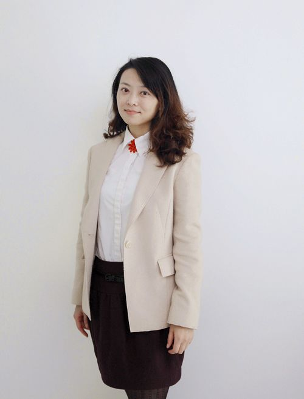
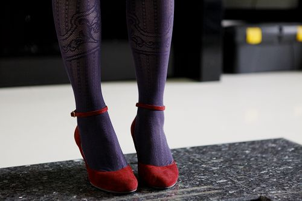
@11/12 黑色羊毛披肩式短外套+黑色棉高领衫+深紫色羊毛裙+低跟短靴
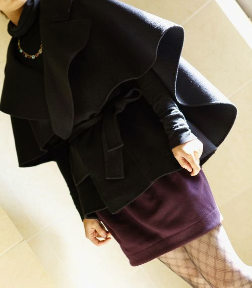
吃下这一锅秋色 @ Nov 08, 2010
到了星期日晚上才记录这一篇，周末两天都忙着吃喝了。和友人们吃喝与家人吃喝完全不同的感受，神经感官满足时，不时有人大喊“好吃哦....哦依希...”，恩，外文冒出来了。
就快告别这年的秋季，周末老天爷特给面子，一律明媚阳光照耀我心。在问问家朝南的大阳台上吃火锅做烧烤，只有真正的吃货们才能做到。从中午一点吃到天黑，大胃王们继而转战室内喝粗茶品甜点....就这样迎来立冬节气了。
彼时看了北京友人拍摄银杏叶子的灿黄，此时沉淀在我们的火锅里，连同暖阳一同进入我们的食道，不能留下秋色，就出下它。
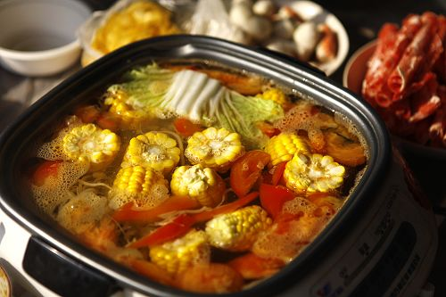
外外：“无论如何俺们要先抢个座儿。”

入味，有弹性，赶脚比外面的烧鸡翅更胜一筹。俺们刚刚就着惬意的阳光灌下一杯澳洲啤酒，鸡翅就端上桌了，再怎么样也要来一只。

轮番上阵烧烤，一顶烧烤大师帽传到她这儿，怎么看都象在跳芭蕾、敲扬琴的架势；

龙竞送来自酿葡萄酒，上面贴着自己设计的标签，中间那行毛泽东字体被俺几个文盲份子读成“新约私酿”、“龙竞私酿”....其实是“龙的私酿”.....这字体也忒拉风了，把俺们吹成了文盲。私酿好喝，酒不醉人人自醉；

细腻又周到的女仆，侧影如此让人陶醉；（上传后发现居然损失了一些细节，NND，谁说网络是万能的？我跟谁急！）
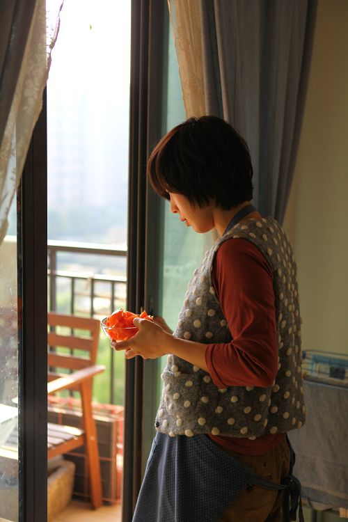
大惊喜电话里说：“你再不来只剩蔬菜了...”俺们那时候在加油站里排队，这路上撞翻多少昆虫啊，赶到问问家，几个人忙得炭火还没生起来，嘿嘿，老天真眷顾我；
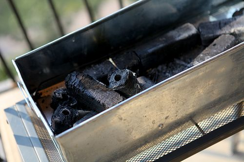
女仆调制的火锅调料，就以往吃火锅的体验，调料最关键，我们下午吃火锅吃得那么爽，多亏了这些调料，能猜出来都有哪些料吗？
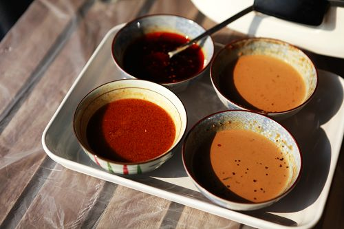
在餐桌周围打游击战的外外；

每个物件都耐人寻味，餐后泡一把从日本带回来的粗茶，这时候怎么可以没有甜点呢？

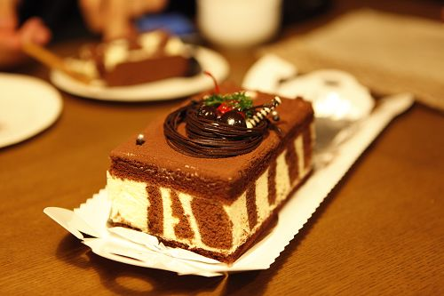
立 冬 @ Nov 07, 2010
立冬这天上午匆忙起床，在家人到来前一个多小时时间，奔去菜场。赖在被窝里的时候就开始寻思：如何能迅速准备好体面的午餐？将狗狗们送到宠物店洗澡，几秒钟决定买些螃蟹回去清蒸，俗语说：“秋风起，蟹脚痒，九月圆脐十月尖。”11月的雄蟹膏肥肉美，令人垂涎。备了菜根发青的青菜和鲜香菇，豆干、玉米、土豆和豆角，称了些卤菜回去可直接上桌。午餐准备好比我想象的要快，末了为立冬这一天上了一份大娘素三鲜水饺。餐后，喝茶吃巧克力，一起看了部名为《无人驾驶》的电影。
如果不和他们度过这样的一个下午，我会做什么？应该很轻松吧，随便做点吃的打发肠胃，看看书上上网看看电影晒晒太阳...耳根清净。但没有被需要的这种价值感，过去在我眼中婆婆妈妈琐碎的家庭生活，现在却有一种亲密又难舍地温暖，忙忙碌碌，地面脏了又如何？时光在琐碎又平凡的生活中渗出幸福感，我想说内心成熟起来，真好。
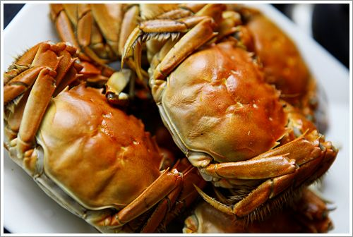
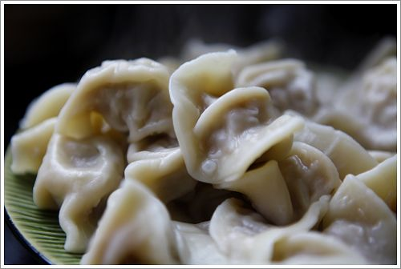

当十二星座被上司臭骂后 @ Nov 03, 2010
他们会。。。

谁，偷了你的梦？ @ Nov 02, 2010
梦醒之前是个湿漉漉的世界，下雨，我半夜未到家，我妈来找我…虽是深夜，却如白昼般光亮。有的人好象从未离开，偶尔出现在梦里，毫无预兆。
每每半夜里醒来，不免伤感，到底又是什么搅了我的睡眠？不醒来，不记录，梦会一个接一个的做下去，然后是什么也回忆不了的早晨。忘性再大，有些人依然存在于潜意识里，时不时在深夜浮出梦境，如影随形。

在围脖上与在“做武侠梦”的小闷蛋不期而遇，她写到：乔峰此生有阿朱，足亦。象是给现实的一个忠告。
我起身穿衣，打开电脑，Luke从温暖的窝里爬出来，伴我到书房，伸了个懒腰，趴在冰凉的地板上继续睡。深夜，仿佛世界只剩下我一人，不管我现在做了什么，这行为也忒文艺了点儿，啊呸。
是现实偷走了我的梦？而我偷走了Luke和土豆的美梦？
深夜醒来的话唠，此时，想来杯毛尖，解解渴。
DRESS BLOG @ Nov 01, 2010
这样的羊毛短裤在我的旧观念里，一定是要等到冬季才会拿出来穿的，事实上冬季穿它的时候，外面需要加件长大衣才行。现在，温度合适，衣着倒是可以根据温度进行，而不用受禁锢于观念。穿上毛衣的秋季，羊毛短裤起着同样的作用。这个季节的办公室其实比冬季要冷。
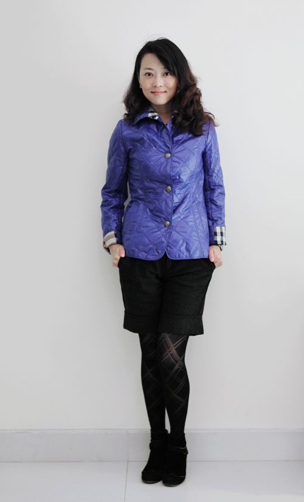